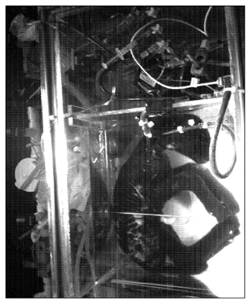

E. Partridge, A. Flake and M. Davey, Esquema de un ejemplo de un aparato de la presente invención. 2014.

E. Partridge, A. Flake and M. Davey, Imagen del cordero conectado al aparato. 2014.
[1]( E. Partridge, A. Flake and M. Davey)
J. Church et al., Esquema de la placenta artificial. 2018.
[2] (J. Church(2018))
E. Partridge, A. Flake and M. Davey, Esquema de un ejemplo de un aparato de la presente invención. 2014.
E. Partridge, A. Flake and M. Davey, Imagen del cordero conectado al aparato. 2014.
Page was started with Mobirise site template